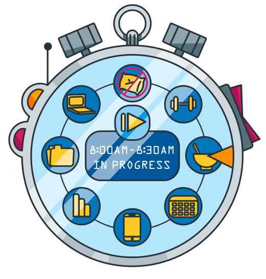

TODO

main
general
rate us
about us
contact us
switch theme
must know
routine of famous peaple
The Queen of England wakes up every morning at 7:30 a.m. Although she doesn't leave her room before 8:30 a.m., the Queen makes sure to start the day with early morning news and a cup of tea. After taking a bath, Queen Elizabeth enjoys a light breakfast at 8:30 a.m. Traditionally, as soon as she hears the sound of bagpipes coming from the terrace (at 9 a.m. sharp), the Queen starts her work for the day. Busy from the early morning, Queen Elizabeth begins her workday by reading newspapers and dealing with the famous ‘'red box'' (containing important paperwork). After two busy hours, the Queen greets foreign dignitaries at 11 a.m. When the meetings are over, she takes a lunch break at 12:30 p.m. The Queen's afternoons are usually busy with wrapping up the day's work and meeting with the Prime Minister. She usually moves away from her desk at 4:30 p.m., right in time for tea. Dinner time is always at 7:30 p.m. Before going to bed at 11 p.m., Queen Elizabeth never skips watching popular TV shows and writing at least a page in her diary. During his presidency, Obama usually woke up at 7 a.m. Immediately after waking up, he spent 45 minutes doing cardio and weight lifting exercises. Then, before heading to the Oval Office, he'd make sure to have breakfast with his family. While at the Oval Office, he would focus on his work from 9 a.m. to 6:30 p.m. After getting back home, the former president never missed the opportunity to have dinner with his family and put his kids to sleep at 8:30 p.m. sharp. Then, he would make the most out of his evenings by going over the next day's briefing materials, before going to bed at 12:30 a.m. or later. He usually gets up as early as 5 a.m. Almost immediately after waking up, he tends to meditate and go for a run. He finishes his morning routine either by taking an ice-cold bath or by sitting in his barrel sauna. At 7:30 a.m., Jack Dorsey usually takes a long walk to work. Instead of commuting to the office, he chooses to spend an hour and a half walking so that he can either listen to a podcast or simply think. From 9 a.m., Dorsey gets to focus solely on his work. At 6:30 p.m. he usually eats his dinner, which is his only meal for the day. While he was still in charge of two distinct companies, Dorsey remained in control of his otherwise chaotic work schedule by organizing his days according to a theme:
add todo